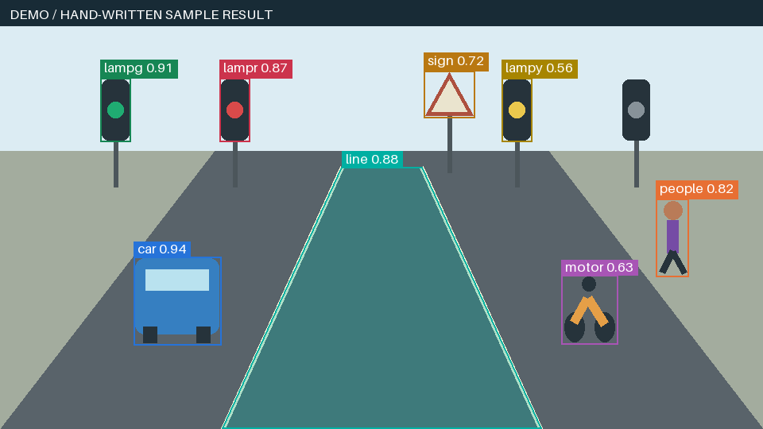

CLASS · CONFIDENCE
무엇을 찾았나?
종류와 예측별 점수입니다. 점수는 전체 모델의 정답률과 다릅니다.
01 / CONNECT8분
모델의 예측을
내가 쓰는 화면으로 옮길 수 있을까요?
결과물: 이미지 분석 앱 실행 + 조건 비교 기록 + 결과 PNG
Streamlit에서 파일을 선택합니다.
학습한 모델이 종류·위치·영역을 반환합니다.
앱에서 결과를 이미지에 겹쳐 그립니다.
학습은 모델을 만드는 과정이고, 추론은 준비된 모델로 새 이미지를 분석하는 과정입니다.
가상 도로와 미리 작성한 결과를 사용합니다. API 키·완성 모델 없이 실행할 수 있습니다.
학습 완료 후 모델 ID와 키를 설정하고 이미지를 전송합니다. 현재 실제 모델 연결은 확인 전입니다.
예제 화면의 숫자를 우리 모델의 성능으로 발표하지 않습니다.
02 / RUN10분
Python 3.12를 준비하고, 압축을 푼 app.py가 있는 폴더에서 PowerShell을 엽니다.
py -3.12 -m venv .venv
.\.venv\Scripts\python.exe -m pip install -r requirements.txt
.\.venv\Scripts\python.exe -m streamlit run app.py
기본값은 “예제 결과로 연습”입니다.
입력 이미지와 결과를 비교합니다. DEMO 문구가 표시됩니다.
line은 반투명 영역, sign 등 일반 객체는 박스입니다.
학습이 끝난 뒤 .streamlit/secrets.toml.example을 secrets.toml로 복사하고 본인 컴퓨터에서 값을 채웁니다.
# 이 파일을 secrets.toml로 복사한 뒤 실제 값은 로컬에서만 입력합니다.
ROBOFLOW_API_KEY = ""
ROBOFLOW_MODEL_ID = ""
모델 ID는 프로젝트와 버전을 고르는 값, API 키는 요청 권한을 확인하는 비밀값입니다. 설정 후 앱을 다시 시작합니다.
예제 모드 이름·DEMO 안내·입력 이미지·실행 버튼이 보이는 화면입니다. 앱을 실행한 뒤 저장하면 됩니다.
03 / REQUEST10분
화면에 그릴 좌표도 API에 보낸 이미지 크기를 기준으로 맞춰야 합니다.
infer_image() 내부의 실제 요청 부분입니다. image는 처리한 이미지, model_id는 프로젝트/버전, api_key는 비밀 설정에서 읽은 값입니다.
client = InferenceHTTPClient(
api_url="https://serverless.roboflow.com",
api_key=api_key,
)
client.configure(InferenceConfiguration(
confidence_threshold=MIN_CONFIDENCE, response_mask_format="polygon",
api_key_transport="header", disable_active_learning=True,
))
return client.infer(image, model_id=model_id)
CLASS · CONFIDENCE
종류와 예측별 점수입니다. 점수는 전체 모델의 정답률과 다릅니다.
X · Y · WIDTH · HEIGHT
박스의 중심과 가로·세로 크기입니다.
POINTS
line 경계를 따라 놓인 꼭짓점들입니다.
API가 돌려준 좌표를 이미지에 그리는 작업은 앱에서 합니다.
모델 ID·Instance Segmentation 유형·Deploy의 Serverless 지원 안내를 확인합니다. API 키는 캡처하지 않습니다. 현재 어노테이션 중에는 이 화면을 준비하지 않아도 됩니다.
04 / DISPLAY14분

왼쪽 = x − width / 2
위쪽 = y − height / 2
오른쪽과 아래쪽은 각각 절반 크기를 더합니다. x·y를 왼쪽 위 모서리로 해석하면 박스가 어긋납니다.
설명용 중심 (100, 80), 크기 (40, 20)이라면 왼쪽 위는 (80, 70), 오른쪽 아래는 (120, 90)입니다.
도로 마스크가 없다고 박스를 채워 대신 표시하면, 영역의 모양을 확인할 수 없습니다.
이 앱은 결과를 세션에 보관합니다. 표시만 바꿀 때는 API를 다시 요청하지 않습니다.
짝 활동 · 5분
표시 임계값 0.40 / 0.70 / 0.90의 객체·도로 영역 개수를 활동지에 기록합니다.
모델의 점수가 바뀌는지, 표시만 바뀌는지 구분합니다.
예제임을 알리는 DEMO 문구와 적용 조건을 함께 확인합니다.
같은 예제 이미지에서 0.40과 0.90의 결과를 각각 저장합니다. 선택 클래스·임계값·DEMO 안내가 보이면 됩니다. 실제 모델 결과와 구분합니다.
05 / REVIEW8분
설정 오류와 모델의 인식 오류는 서로 다른 문제입니다.